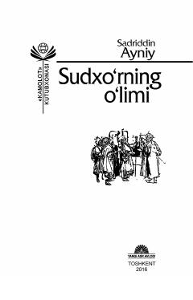

SAXasis sudxo'r Qori Ishkamba hayotining fojiali qissasi.
Sadriddin Ayniyning 'Sudxo'rning o'limi' qissasi Buxoroda yashovchi xasis va sudxo'r Qori Ishkamba obrazi orqali boylikka ko'r-ko'rona berilgan insonning fojiasini tasvirlaydi. Asar 1895-yilgi Buxoro muhitida yosh talabaning Qori Ishkamba bilan tanishuvidan boshlanib, uning xarakteri va atrofdagi odamlarga munosabatini ochib beradi. Qissa o'quvchida kulgi bilan birga g'azab va rahm-shafqat tuyg'ularini uyg'otadi.